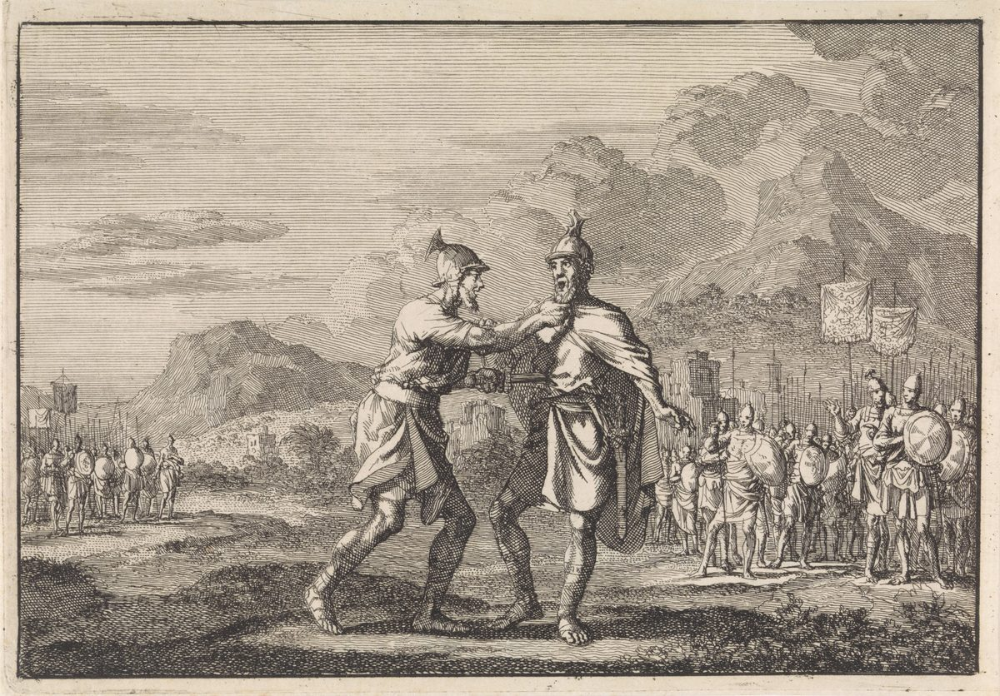

2 Samuel 20 — La Traducción Mister

2 Samuel 20:8–10. El título es el del museo. Luyken muestra a Joab sujetando a Amasa por la barbilla donde el hebreo hace que la mano derecha tome la barba (versículo 9), y la hoja al costado de Amasa (versículo 10); los soldados que esperan detrás son la fuerza de la gran piedra de Gabaón (versículo 8), y los estandartes y la ciudad del fondo son propios del grabado. El texto da el beso como la razón de la mano sobre la barba, y el grabado no muestra ningún beso; no señala cuál es cada hombre más allá de su título.

Notas del traductor — versículo por versículo
Un hombre de la nada. «Y había allí por casualidad un hombre de la nada, cuyo nombre era Seba hijo de Bicri, benjaminita»: el hebreo es ish beliyaal (véase beliyaal), y el último lugar que nombró el capítulo anterior fue Gilgal (2 Samuel 19:41, ya en estas páginas), donde Israel y Judá disputaban por el rey. La RV 1909 dice «un hombre perverso». La NVI dice «un malvado». La TNM 1987 dice «un hombre que no servía para nada». El griego de Rahlfs tiene huios paranomos, «un hijo sin ley». Es «benjaminita», ish yemini, con la misma palabra, yemini, que se dijo de Simei (2 Samuel 19:17), y Joab lo llamará «un hombre del monte de Efraín» (versículo 21); la página no concilia las dos cosas.
El cuerno y el grito. «Y tocó el cuerno, y dijo: “No tenemos parte en David, ni herencia para nosotros en el hijo de Isaí; ¡cada uno a su tienda, Israel!”»: el cuerno es el shofar, y «y tocó el cuerno», con el cuerno escrito en este texto sin la letra vav, está en dos versículos: este y el versículo 22, donde el cuerno de Joab manda a casa a la misma gente. El grito son dos sustantivos, chelek y nachalah, «parte» y «herencia», y la segunda mitad es el desprecio de Nabal: «¿Quién es David? ¿Y quién es el hijo de Isaí?» (1 Samuel 25:10, ya en estas páginas). La RV 1909 dice «No tenemos nosotros parte en David, ni heredad en el hijo de Isaí». La NVI dice «no tenemos parte con David ni herencia con el hijo de Isaí». La TNM 1987 dice «Nosotros no tenemos parte que nos corresponda en David». El griego de Rahlfs tiene ouk estin hēmin meris en Dauid, y termina el grito «a tus tiendas», en segunda persona. «Cada uno a su tienda» está en siete versículos: el despido que hace Gedeón del resto de Israel (Jueces 7:8), la huida de Israel cuando lo vencen los filisteos (1 Samuel 4:10), el envío del pueblo a casa por Saúl (13:2), la huida de Israel a sus tiendas tras la derrota de Absalón (2 Samuel 19:9, todos ya en estas páginas), este, el versículo 22 y 2 Crónicas 25:22.
Su tienda, o sus dioses. Las últimas palabras del grito son el punto en que se parte el estante. La TNM 1987 dice «¡Cada uno a sus dioses, oh Israel!». El hebreo impreso aquí dice le’ohalav, «a sus tiendas», y así lo entienden la RV 1909 y la NVI («a sus casas»); la lectura «dioses» es la que se dice que da, para este versículo, una antigua lista judía de cambios de los escribas, y ese dato no está comprobado aquí. El mismo grito vuelve, como pregunta y con «tus tiendas», cuando Israel responde a Roboam (1 Reyes 12:16; 2 Crónicas 10:16, ninguno todavía en estas páginas).
Subió, y se mantuvo unido. «Y todo hombre de Israel subió de en pos de David, en pos de Seba hijo de Bicri; pero los hombres de Judá se mantuvieron unidos a su rey, desde el Jordán hasta Jerusalén»: el hebreo pone dos preposiciones una al lado de la otra, me’acharei David … acharei Sheva, «de en pos de David … en pos de Seba», de modo que lo que se mueve es el seguir. La RV 1909 dice «fueron adheridos á su rey». La NVI dice «se mantuvieron fieles a su rey». La TNM 1987 dice «se adhirieron a su rey». El griego de Rahlfs tiene ekollēthē, «fue pegado». El verbo es davaq, el que dice que el hombre «se une a su mujer» (Génesis 2:24, ya en estas páginas) y que «Rut se quedó junto a ella» (Rut 1:14, ya en estas páginas). «Desde el Jordán hasta Jerusalén» es el camino por el que acaban de traer al rey. Judá había dicho que el rey era cercano a ella (2 Samuel 19:43), y el hombre de Israel había reclamado «diez manos» en él (19:44); el versículo 3 tiene diez mujeres, eser nashim, y no dice nada del número.
Diez mujeres, concubinas. «Y el rey tomó a las diez mujeres, concubinas, que había dejado para guardar la casa»: «diez mujeres, concubinas» está en dos versículos, 2 Samuel 15:16, donde las deja, y este. Entre uno y otro fueron las esposas que Natán dijo que serían tomadas ante los ojos de David y entregadas a su prójimo (2 Samuel 12:11–12) y las mujeres a las que Absalón «entró» en la azotea (2 Samuel 16:22, todos ya en estas páginas; véase pilegesh). «Y las puso en una casa de custodia»: el hebreo es beit mishmeret. La RV 1909 dice «púsolas en una casa en guarda». La NVI dice «las puso bajo vigilancia». La TNM 1987 dice «las puso en una casa de encierro».
Sustentó. «Y las sustentó; pero no entró a ellas»: el verbo es vaykhalkhelem, de kilkal, el verbo de lo que Barzilai hizo por el rey en Mahanaim (2 Samuel 19:33) y de lo que el rey le promete en Jerusalén (19:34); aquí es lo que David hace por las mujeres a las que no verá. La RV 1909 dice «dióles de comer». La NVI dice «Siguió manteniéndolas». La TNM 1987 dice «siguió proveyéndoles alimento». «No entró a ellas» usa el verbo del acto de Absalón en la azotea: el mismo bo, «entrar», que se dijo de él.
Una viudez en vida. «Y quedaron encerradas hasta el día de su muerte, en una viudez en vida»: el hebreo es almenut chayyut, «una viudez de vida», y las dos palabras juntas están solo aquí. La primera es el sustantivo de almanah, una viuda; la segunda es «vida», puesta detrás como la palabra que la anula, porque el marido vive. La RV 1909 dice «viudez de por vida». La NVI dice «viviendo como si fueran viudas». La TNM 1987 dice «en viudez con un [esposo] vivo». El griego de Rahlfs tiene chērai zōsai, «viudas vivas». «Encerradas» es tserurot, «atadas».
Lo que el versículo dice y no dice. Cuatro verbos tienen a David por sujeto y a las mujeres por objeto: las tomó, las puso en custodia, las sustentó y no entró a ellas. Las mujeres no tienen palabra en el versículo, y el versículo no pronuncia juicio sobre el rey. Dice lo que se hizo, lo que se negó y por cuánto tiempo, y luego la narración se vuelve a Amasa.
Convócame. «Convócame a los hombres de Judá dentro de tres días; y tú, quédate aquí»: el verbo es haz’eq, «clamar», usado aquí para reunir a los hombres, y es la primera tarea de Amasa desde que el rey le prometió el ejército «en lugar de Joab» (2 Samuel 19:14, ya en estas páginas). La RV 1909 dice «Júntame los varones de Judá para dentro de tres días». La NVI dice «Moviliza a las tropas de Judá». La TNM 1987 dice «Convócame a los hombres de Judá dentro de tres días». El griego de Rahlfs tiene boēson, «grita».
Se demoró. «Y Amasa fue a convocar a Judá; pero se demoró más allá del tiempo señalado que el rey le había fijado»: en esta palabra el texto está escrito de una manera y leído de otra, escrito vayyiher y leído vayyoher, «y se demoró». El hebreo dice «del tiempo señalado que le señaló», min-hamo’ed asher ye’ado, con una misma raíz dos veces. La RV 1909 dice «detúvose más del tiempo que le había sido señalado». La NVI dice «no cumplió con el plazo». La TNM 1987 dice «tardó más en venir que el tiempo establecido». El griego de Rahlfs tiene echronisen, «tomó tiempo». El texto no dice por qué llegó tarde, ni cuenta lo que el rey dijo de ello.
Peor para nosotros que Absalón. «Ahora Seba hijo de Bicri será peor para nosotros que Absalón. Tú, toma a los siervos de tu señor y persíguelo, no sea que halle para sí ciudades fortificadas, y escape de nuestro ojo»: David habla a Abisai, no a Joab, y se llama a sí mismo «tu señor». La RV 1909 dice «nos hará ahora más mal que Absalom». La NVI dice «va a perjudicarnos más que Absalón». La TNM 1987 dice «nos será peor que Absalón». La última cláusula es vehitsil eineinu, forma de natsal, «librar», con «nuestro ojo» por objeto. La RV 1909 dice «y se nos vaya de delante». La NVI dice «se nos escape». La TNM 1987 dice «escape ante nuestros ojos». El griego de Rahlfs tiene skiasei tous ophthalmous hēmōn, «sombreará nuestros ojos».
Los hombres de Joab. «Y salieron tras él los hombres de Joab, y los cereteos y los peleteos y todos los valientes»: el texto dice «los hombres de Joab», aunque la orden se dio a Abisai, y no dice quién los manda. La NVI dice «bajo el mando de Abisay», que es añadido. «Los cereteos y los peleteos» está en cinco versículos: 2 Samuel 8:18, este, y 1 Reyes 1:38, 44 (ambos ya en estas páginas), y 1 Crónicas 18:17. La guardia que cruzó delante del rey cuando huyó de Absalón (2 Samuel 15:18) sale ahora tras Seba.
La espada que cayó. «Estaban ellos junto a la gran piedra que está en Gabaón, y Amasa vino delante de ellos. Y Joab estaba ceñido con su ropa, su vestido, y sobre ella un cinto con una espada sujeta a sus lomos en su vaina; y él salió, y cayó»: Gabaón es donde los hombres de Joab y los de Abner se sentaron a uno y otro lado del estanque (2 Samuel 2:13, ya en estas páginas). La última cláusula es vehu yatsa vattippol, «y él salió, y cayó», y el verbo «cayó» es femenino, como lo es la palabra para espada. El hebreo no dice si la espada cayó por azar o por su mano. La RV 1909 dice «cayóse aquélla». La NVI dice «Pero al caminar, la daga se le cayó». La TNM 1987 dice «y así que esta se cayó». El griego de Rahlfs tiene kai hē machaira exēlthen kai epesen, «y la espada salió y cayó».
¿Hay paz contigo, hermano mío? «¿Hay paz contigo, hermano mío?» es hashalom attah achi (véase shalom), la pregunta hecha por el joven Absalón (2 Samuel 18:29, ya en estas páginas). Amasa es primo de Joab, hijo de Abigal, hermana de Sarvia (2 Samuel 17:25), y la palabra para «hermano» es la que los versículos siguientes usan de Abisai. «Y la mano derecha de Joab tomó la barba de Amasa para besarlo»: el verbo es vattochez, femenino, y su sujeto es la mano. La RV 1909 dice «tomó Joab con la diestra la barba de Amasa». La NVI dice «Con la mano derecha, Joab tomó a Amasá por la barba». La TNM 1987 dice «la mano derecha de Joab asió la barba de Amasá». El griego de Rahlfs tiene ekratēsen hē cheir hē dexia Iōab, «la mano derecha de Joab sujetó». El beso es uno de los besos de este libro (2 Samuel 14:33; 19:40).
En el vientre. «Pero Amasa no se guardó de la espada que estaba en la mano de Joab; y este lo hirió con ella en el vientre, y derramó sus entrañas por tierra, y no se lo hizo una segunda vez — y murió»: el-hachomesh es el lugar de la lanza en 2 Samuel 2:23 (Abner y Asael), del golpe en la puerta en 3:27 (Joab y Abner) y de la casa en 4:6 (Recab y Baana), todos ya en estas páginas (véase chomesh). La RV 1909 dice «hirióle éste con ella en la quinta costilla». La NVI dice «Joab se la clavó en el vientre». La TNM 1987 dice «le hirió con ella en el abdomen». «Y no se lo hizo una segunda vez» está solo aquí; Abisai había dicho de Saúl «no se lo haré dos veces» (1 Samuel 26:8, ya en estas páginas), en primera persona, y no como relato de un golpe. «Y derramó sus entrañas» está solo aquí, y vayyishpokh, «derramó», es el verbo de la rampa del versículo 15. La RV 1909 dice «derramó sus entrañas por tierra». La NVI dice «Amasá murió de una sola puñalada». «Y Joab, y Abisai su hermano, persiguieron»: el verbo hebreo está en singular.
El que se complace en Joab. «Y un hombre de los jóvenes de Joab se paró junto a él, y dijo: “El que se complace en Joab, y el que es de David — ¡en pos de Joab!”»: el verbo es chafets, el que usaron los siervos de Saúl cuando dijeron a David que «el rey se agrada de ti» (1 Samuel 18:22, ya en estas páginas). La RV 1909 dice «Cualquiera que amare á Joab y á David vaya en pos de Joab». La NVI dice «Todos los que estén a favor de Joab y que apoyen a David, sigan a Joab». La TNM 1987 dice «Quienquiera que se haya deleitado en Joab». La llamada pone primero y último el nombre de Joab, y el de David en medio. «Y Amasa se revolcaba en la sangre en medio del camino real»: el participio mitgolel con «en la sangre» está solo aquí. La TNM 1987 dice «estaba revolcándose en la sangre en medio de la calzada». «Todo el pueblo se detenía» repite el verbo de 2 Samuel 2:23, donde todos los que llegaban al lugar donde Asael había caído se detenían, y de 2:28, donde se detuvieron ante el cuerno de Joab. El hombre «apartó a Amasa del camino hacia el campo, y echó sobre él un manto», y «todo hombre pasó en pos de Joab». La NVI dice «todas las tropas que pasaban se detenían para verlo», que da una causa que el hebreo deja a lo que el hombre vio.
Pasó por. «Y él pasó por todas las tribus de Israel hasta Abel y Bet-maaca, y todos los beritas; y se juntaron, y entraron también en pos de él»: el verbo no tiene sujeto nombrado, y la traducción deja «él»; la NVI y la TNM nombran a Seba, y la RV 1909 deja «él», de modo que el «en pos de él» sería de Seba. Los dos nombres, Abelah y Beit Ma’akhah, son una sola ciudad en el versículo siguiente, «Abel de Bet-maaca», y es una ciudad del norte, que Ben-hadad hiere en 1 Reyes 15:20 y Tiglat-pileser toma en 2 Reyes 15:29 (ninguno todavía en estas páginas). Al final el texto vuelve a estar escrito de una manera y leído de otra, escrito vayyiqlehu y leído vayyikkahalu, «y se juntaron».
Todos los beritas. «Los beritas», haBerim, es una palabra que está solo aquí, y el estante la lee de tres maneras. La RV 1909 dice «todo Barim». La NVI dice «todos los del clan de Bicrí se le unieron». La TNM 1987 dice «todos los bicritas». El griego de Rahlfs tiene pantes en Charri, que conserva la palabra como nombre. La lectura «bicritas» toma la palabra por una forma del nombre del padre de Seba; es una conjetura, y el hebreo impreso tiene Berim.
Una rampa junto al antemuro. «Y vinieron y lo sitiaron en Abel de Bet-maaca, y levantaron una rampa de asedio contra la ciudad, y quedó junto al antemuro»: vayyishpekhu solelah, «derramaron una rampa», con el verbo de las entrañas derramadas del versículo 10, y vattaʿamod bachel, «y se alzó junto al antemuro». La RV 1909 dice «pusieron baluarte contra la ciudad». La NVI dice «Construyeron una rampa contra la fortificación». La TNM 1987 dice «alzar contra la ciudad un cerco de sitiar». La palabra chel es una defensa fuera del muro, y el estante no se pone de acuerdo sobre si es un foso o un talud.
Obrar ruina. «Y todo el pueblo que estaba con Joab obraba ruina, para hacer caer el muro»: el participio es mashchitim, de shachat, «arruinar», el verbo de «arruinaron a los hijos de Amón» (2 Samuel 11:1, ya en estas páginas), y en el hebreo no tiene objeto. La RV 1909 dice «trabajaba por derribar la muralla». La NVI dice «comenzaban a derribar la muralla». La TNM 1987 dice «estaba socavando el muro». El griego de Rahlfs tiene enooun katabalein, «pensaban derribar». Es el verbo que Joab rechazará en el versículo 20.
Una mujer sabia. «Y una mujer sabia gritó desde la ciudad: “¡Oigan, oigan! Digan, por favor, a Joab: Acércate hasta aquí, y hablaré contigo”»: «una mujer sabia», ishah chakhamah, está en dos versículos, la mujer de Tecoa a quien Joab mandó llamar (2 Samuel 14:2) y esta (véase chokhmah); ninguna tiene nombre, y esta manda llamar a Joab. «Oigan, oigan» está solo aquí. Cuando él viene ella pregunta «¿Eres tú Joab?», y dice «Oye las palabras de tu sierva»; «las palabras de tu sierva» está en dos versículos, este y en boca de Abigail a David (1 Samuel 25:24), y el «Hable tu sierva» de la mujer de Tecoa (14:12) es una tercera manera de pedirlo (todos ya en estas páginas). Él responde «Estoy oyendo». La RV 1909 dice «Oigo». La NVI dice «Te escucho». La TNM 1987 dice «Estoy escuchando».
Una madre en Israel. «Yo soy de los pacíficos, de los fieles de Israel; tú buscas dar muerte a una ciudad y a una madre en Israel. ¿Por qué has de tragarte la herencia de Jehová?»: «pacíficos» y «fieles» son dos plurales, shelumim y emunim. «Una madre en Israel», em beYisra’el, está en dos versículos: este y el «me levanté, una madre en Israel» de Débora (Jueces 5:7, ya en estas páginas); el tercer versículo que escribe las mismas letras, 2 Reyes 5:15, tiene «si» y no «madre». La RV 1909 dice «una ciudad que es madre de Israel». La NVI dice «muy importante en Israel». La TNM 1987 dice «dar muerte a una ciudad y a una madre en Israel». El griego de Rahlfs tiene polin kai mētropolin, «una ciudad, una ciudad madre». «Tragarte» es bala, el verbo del aviso de Husai de que el rey podía ser tragado (2 Samuel 17:16). «La herencia de Jehová» está en cuatro versículos: la queja de David de que lo echan de ella (1 Samuel 26:19, ya en estas páginas), este, 2 Samuel 21:3 (ya en estas páginas) y el Salmo 127:3. Es el sustantivo del grito del versículo 1: Seba dice que Israel no tiene nachalah en David, y la mujer dice que Joab se está tragando la de Jehová.
Lejos, lejos esté. «Lejos, lejos esté de mí tragar o arruinar»: el chalilah duplicado está solo aquí (véase chalilah). La RV 1909 dice «Nunca tal, nunca tal me acontezca». La NVI dice «¡Que Dios me libre!». La TNM 1987 dice «Es absolutamente inconcebible de parte mía». El griego de Rahlfs tiene hileōs moi hileōs moi, «sé benigno conmigo». Su segundo verbo, «arruinar», es el que su propia gente está haciendo en el versículo 15, y el hebreo no tiene palabra para decir cómo encajan los dos. «Un hombre del monte de Efraín, Seba hijo de Bicri es su nombre, ha alzado su mano contra el rey, contra David»: las palabras «su mano contra el rey» están solo aquí, y los hombres que «alzaron su mano contra mi señor el rey» son la frase de Ahimaas sobre el ejército de Absalón (2 Samuel 18:28, ya en estas páginas). La RV 1909 dice «ha levantado su mano contra el rey David». La TNM 1987 dice «ha alzado su mano contra el rey David».
Que pregunten sin falta en Abel. «Solían decir antiguamente: “Que pregunten sin falta en Abel”; y así concluían»: dabber yedabberu barishonah leimor sha’ol yish’alu be’Abel vekhen hetammu, y el sentido es incierto. La RV 1909 dice «Quien preguntare, pregunte en Abel: y así concluían». La NVI dice «Vayan y pregunten en Abel». La TNM 1987 dice «Que solo inquieran en Abel, y así ciertamente acabarán con el asunto». El griego de Rahlfs tiene en Abel kai en Dan, «en Abel y en Dan», dos ciudades donde el hebreo tiene una. El infinitivo sha’ol, «pregunten sin falta», se escribe con las mismas letras que el nombre de Saúl, Sha’ul, «pedido», y que Seol; las palabras no son las mismas. «Mira, su cabeza te será arrojada por encima del muro»: Absalón fue arrojado a la fosa (2 Samuel 18:17) y un manto sobre Amasa (versículo 12). «Y la mujer fue a todo el pueblo con su sabiduría», bechokhmatah, y el texto no da palabra suya; el pueblo corta la cabeza. La RV 1909 dice «tocó la corneta, y esparciéronse de la ciudad, cada uno á su estancia». La NVI dice «se retiraron de la ciudad y regresaron a sus casas». La TNM 1987 dice «se esparcieron de la ciudad, cada uno a su hogar». El grito del versículo 1 es la orden que lo cierra, y «Joab volvió a Jerusalén, al rey» sin una palabra del rey.
La lista otra vez. «Y Joab estaba sobre todo el ejército de Israel; y Benaía hijo de Joiada sobre los cereteos y los peleteos»: es la lista de 2 Samuel 8:16–18 (ya en estas páginas) con cuatro cambios. Joab está sobre «todo el ejército de Israel» donde la primera lista decía solo «el ejército»; los trabajos forzados tienen un hombre sobre ellos; el escriba es Seva donde era Seraías; e Ira el yairita es sacerdote donde lo eran los hijos de David. La RV 1909 dice «Así quedó Joab sobre todo el ejército de Israel». La NVI dice «Joab era general de todo el ejército de Israel». La TNM 1987 dice «Joab estaba sobre todo el ejército de Israel». Entre el versículo 22 y el 23 el texto no dice nada de cómo arreglaron el rey y Joab lo que Joab hizo a Amasa, a quien el rey había nombrado en su lugar (2 Samuel 19:14).
Adoram. «Y Adoram sobre los trabajos forzados»: al-hamas (véase mas). La RV 1909 dice «Adoram sobre los tributos». La NVI dice «Adonirán supervisaba el trabajo forzado». La TNM 1987 dice «Adoram estaba sobre los reclutados para trabajo forzado». El griego de Rahlfs tiene Adōniram. El hebreo de aquí es Adoram, y el mismo hombre o el mismo cargo está en 1 Reyes 4:6 como «Adoniram hijo de Abda … sobre el tributo» y en 1 Reyes 12:18, donde Roboam envía a «Adoram, que estaba sobre el tributo» e Israel lo apedrea (ninguno todavía en estas páginas). «Y Josafat hijo de Ahilud era cronista», como en 8:16.
Escrito y leído. «Y Benaía … sobre los cereteos y los peleteos»: en este versículo el texto está escrito hakkari, «los carios», y leído hakkerethi, «los cereteos». «Y Seva era escriba»: aquí está escrito shiʼa y leído shewa. La primera lista tenía a Seraías (2 Samuel 8:17), y 1 Crónicas 18:16 tiene a Savsa. La RV 1909 dice «Seba, escriba». La NVI dice «Seva era el cronista». La TNM 1987 dice «Sevá era secretario». «Y Sadoc y Abiatar eran sacerdotes» es la pareja de 2 Samuel 15:29, que devolvió el arca de Dios a Jerusalén y se quedó allí.
Un sacerdote de David. «Y también Ira el yairita era sacerdote de David»: el hebreo es kohen ledavid, la palabra que 8:18 usó de los hijos de David. La RV 1909 dice «Ira Jaireo fué un jefe principal cerca de David». La NVI dice «sacerdote personal de David». La TNM 1987 dice «también llegó a ser sacerdote de David». El griego de Rahlfs tiene hiereus. «Yairita» puede significar de Jair, cuyas aldeas son las Javot-jair (Números 32:41), y el texto no lo llama levita; las traducciones que dicen «jefe principal» eligen un sentido por quién es él, y no hay otra palabra hebrea que estén traduciendo. El capítulo que empezó con un cuerno termina con una lista, y la lista empieza con Joab.
Patrones que vale la pena llevar adelante
Donde esta traducción mantiene las palabras exactas y distintas: «un hombre de la nada»; «no tenemos parte en David»; «cada uno a su tienda»; «se mantuvieron unidos a su rey»; «las diez mujeres, concubinas»; «una casa de custodia»; «sustentó»; «una viudez en vida»; «convócame»; «peor para nosotros que Absalón»; «escape de nuestro ojo»; «¿Hay paz contigo, hermano mío?»; «la mano derecha de Joab tomó»; «en el vientre»; «derramó sus entrañas»; «no se lo hizo una segunda vez»; «el que se complace en Joab»; «se detenía»; «los beritas»; «una rampa»; «obrar ruina»; «una mujer sabia»; «las palabras de tu sierva»; «una ciudad y una madre en Israel»; «tragar»; «la herencia de Jehová»; «lejos, lejos esté»; «alzado su mano contra el rey»; «con su sabiduría»; «los trabajos forzados»; y «un sacerdote de David»; con las formas escritas en las notas.
Ecos pagados. Las diez concubinas dejadas, tomadas y encerradas (2 Samuel 15:16; 12:11–12; 16:22); el kilkal de Barzilai (2 Samuel 19:33–34); el «hijo de Isaí» de Nabal (1 Samuel 25:10); las tiendas de Gedeón, de Israel y de Saúl (Jueces 7:8; 1 Samuel 4:10; 13:2; 2 Samuel 19:9); el unirse de Adán y de Rut (Génesis 2:24; Rut 1:14); los golpes «en el vientre» que mataron a Asael, a Abner y a Isboset (2 Samuel 2:23; 3:27; 4:6); el pueblo que se detuvo ante el cuerpo de Asael y ante el cuerno de Joab (2 Samuel 2:23, 28); el «no se lo haré dos veces» de Abisai (1 Samuel 26:8); el «se agrada de ti» de los siervos de Saúl (1 Samuel 18:22); los cereteos y los peleteos (2 Samuel 8:18; 1 Reyes 1:38, 44); la guardia que cruzó delante del rey (2 Samuel 15:18); la ruina de Amón (2 Samuel 11:1); la mujer sabia de Tecoa, la sierva de Abigail y Débora la madre en Israel (2 Samuel 14:2, 12; 1 Samuel 25:24; Jueces 5:7); el «tragado» de Husai (2 Samuel 17:16); la «herencia de Jehová» de David (1 Samuel 26:19); la mano alzada de los hombres de Absalón y Absalón arrojado a la fosa (2 Samuel 18:28, 17); Amasa el primo puesto sobre el ejército y prometido para él (2 Samuel 17:25; 19:14); y la primera lista de los oficiales de David (2 Samuel 8:16–18).
Ecos plantados. La respuesta de Israel a Roboam, con «parte», «herencia» y «a tus tiendas» (1 Reyes 12:16; 2 Crónicas 10:16); el encargo de David a Salomón sobre lo que Joab hizo a Abner y a Amasa, y Joab en el altar, herido por Benaía (1 Reyes 2:5, 28–34); la toma de Abel-bet-maaca por Ben-hadad y por Tiglat-pileser (1 Reyes 15:20; 2 Reyes 15:29); Adoniram y Adoram sobre el tributo (1 Reyes 4:6; 12:18); el escriba Savsa (1 Crónicas 18:16); la «herencia de Jehová» otra vez (2 Samuel 21:3, ya en estas páginas; Salmo 127:3); el hambre y los gabaonitas (2 Samuel 21:1–2, ya en estas páginas); y los tocayos de Ira el yairita (2 Samuel 23:26, 38). Ninguno de los demás está todavía en estas páginas.
Siguiente en este libro: 2 Samuel 21 — un hambre de tres años, David consulta a Jehová, y se nombra a los gabaonitas.